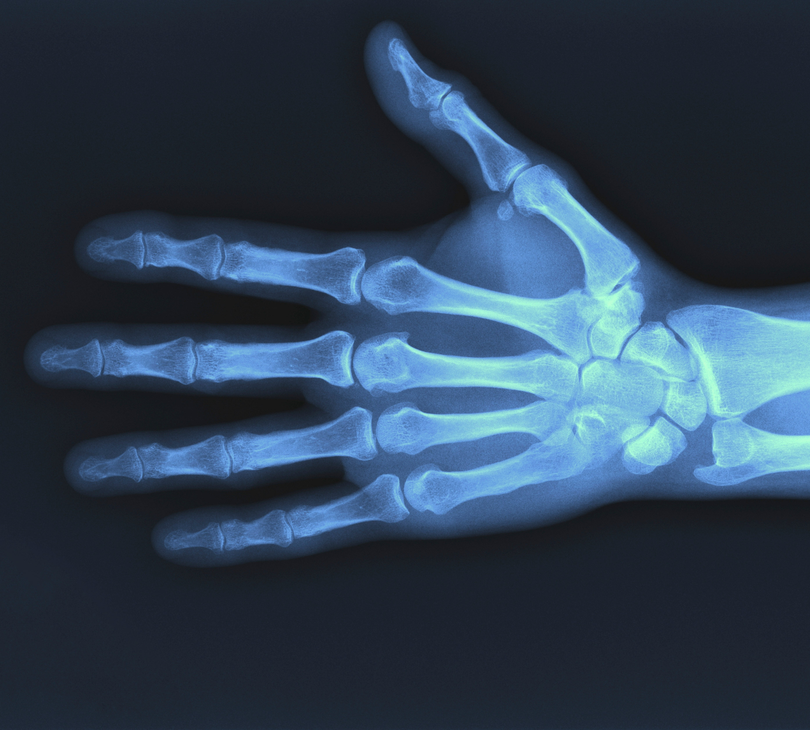

Cargando ...
Toggle navigation
Agendar una cita

Doctor
Javier Baldizón Recio
∎
Especialista en:
Artroscopia y Lesiones Deportivas, Ortopedia Pediátrica, Cirugía de Pie y Tobillo,
Reconstrucción Articular, Trauma de Urgencia, Trauma Extrahospitalaria.
Agendar una cita
∎
Telefono:
844 485 0112